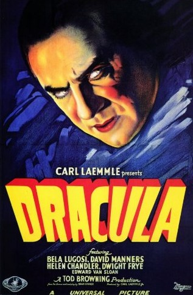
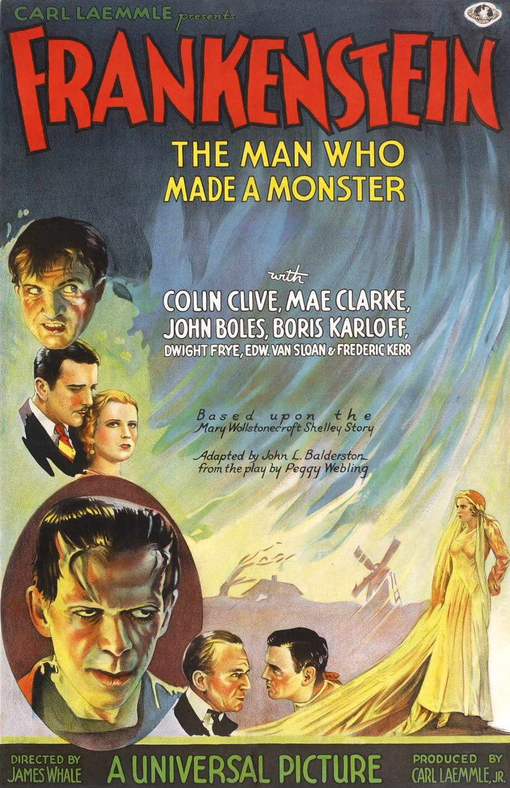
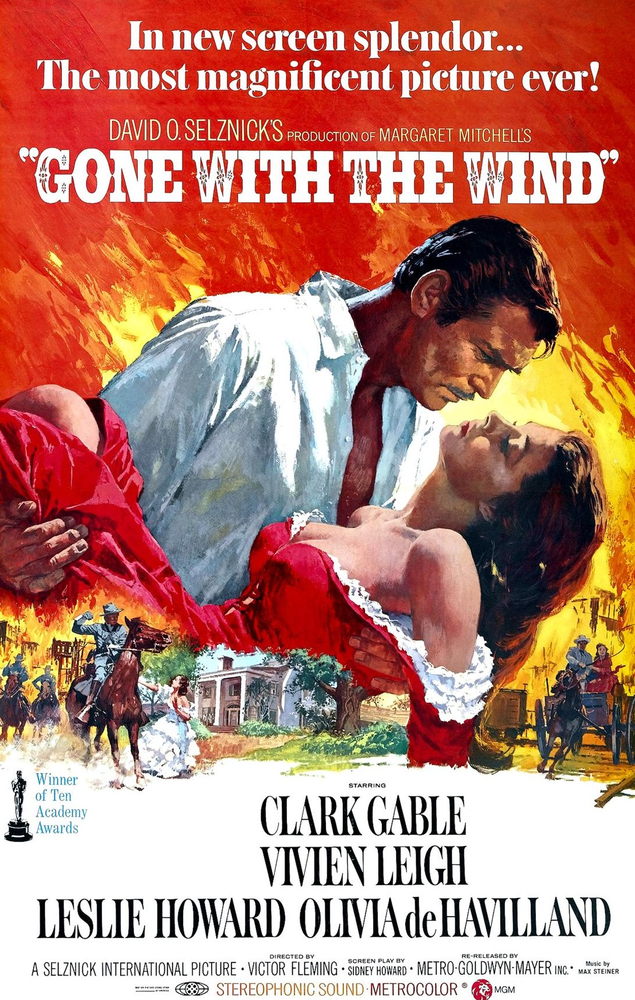
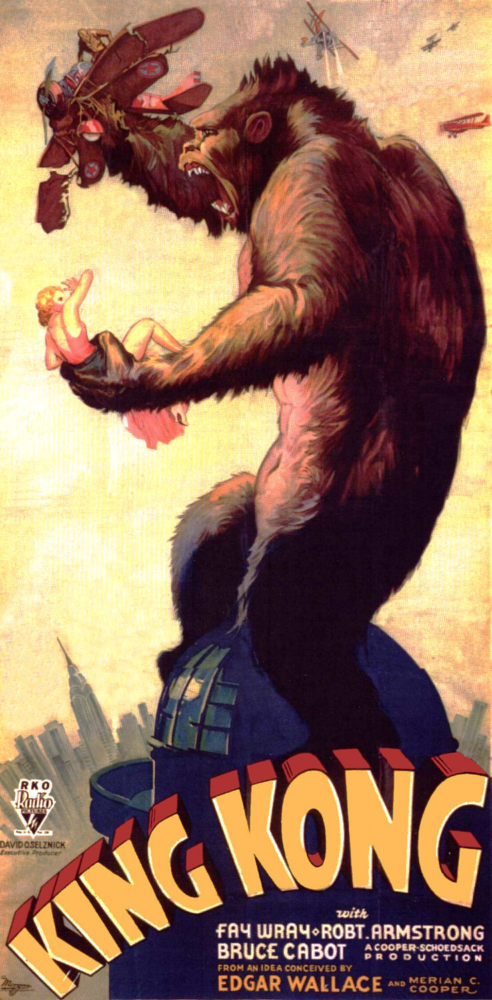
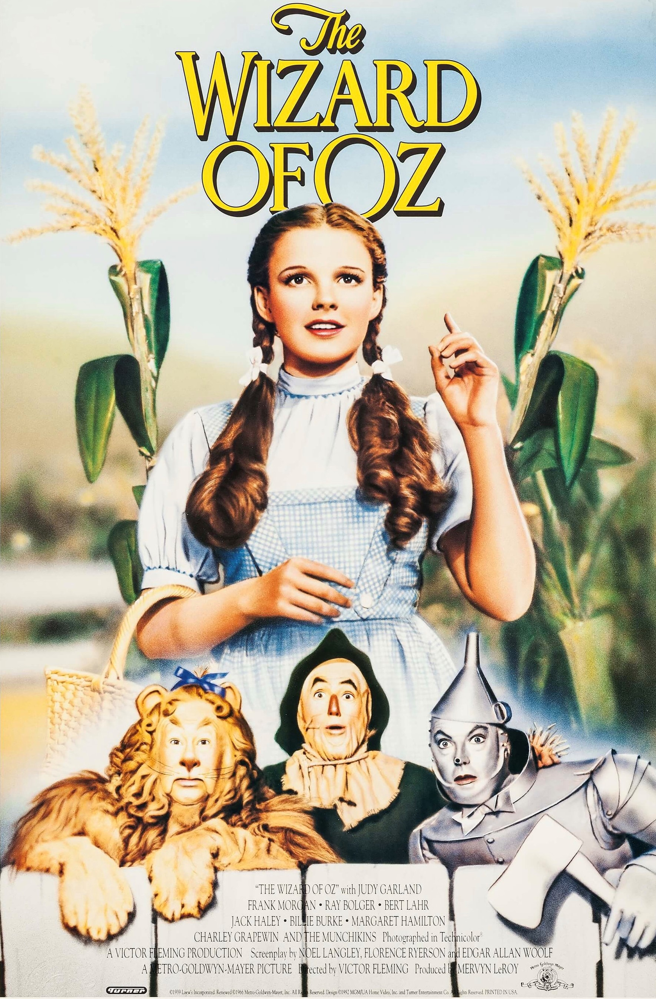

1927 - 1940

The Reinvention of Hollywood
The year is 1927, it's the beginning of a new Era in the history of film and the year Hollywood "reinvented" itself with the release of Warner Brothers' "The Jazz Singer". It was the first feature length sound movie that was created and promoted in the United States. Two years later, it's 1929 and all Hollywood films now feature synchronised voice, effect and music tracks.
The Rise of Hollywood Studios Era involved the expansion of cinemas, it brought to life the horror genre and monster movies, and bigger stars started
to appear on the silver screen such as Judy Garland, Bela Lugosi and Clark Gable.
Notable Films of "The Rise of Hollywood Studios" Era:




